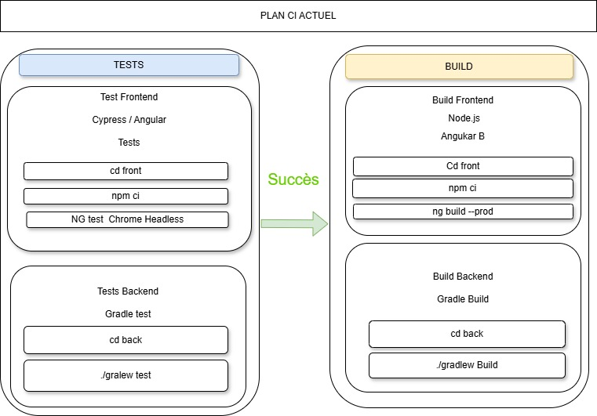

Le pipeline d’intégration continue originel du projet est simple. Il comporte seulement deux étapes : l’exécution des tests et, si ceux-ci réussissent, la génération du build de l’application.

Chaque modification du code déclenche automatiquement l’exécution des tests afin de vérifier que l’application fonctionne correctement.
Si les tests passent avec succès, le système génère automatiquement le build de l’application.